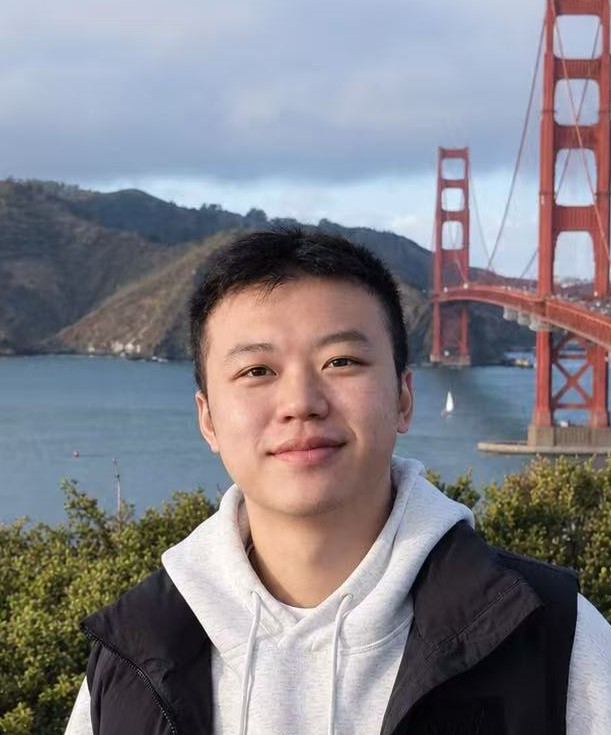

Learning Agent Execution for KV-Cache Management in Agentic Serving
PreprintarXiv:2608.14624, 2026

Ph.D. Student, Computer Science & Engineering
University of California, Santa Cruz
Advised by Liting Hu
I am a Computer Science Ph.D. student at the University of California, Santa Cruz, advised by Liting Hu. I build systems for machine learning, with a focus on the serving and inference layer: how to make large language models fast, cheap, and predictable when they are run at scale.
Most of my recent work sits around the KV cache — the piece of state that decides whether an LLM request costs a full prefill or almost nothing. I care especially about agentic workloads, where a single user task fans out into many interacting agents, tool calls, and multi-turn contexts, and where the cache access patterns look nothing like the single-chat case that today's serving stacks were tuned for.
Alongside my Ph.D. I am a founding engineer at Tensormesh, where the same questions show up with production traffic attached. Before graduate school I spent a year at Huawei as a software engineer, and interned at Bosch and HUST's CGCL lab.
I work closely with Junchen Jiang, Yuhan Liu, and Kuntai Du at the University of Chicago, and I am a contributor to LMCache and the vLLM production stack.
Next-generation agent infrastructure should treat agent execution semantics and state as first-class systems abstractions. By exposing and learning these semantics, systems can make better decisions about resource scheduling, state management, computational reuse, and eventually large-scale agent learning.
That is my dissertation direction. Serving stacks today treat every request as an independent chat turn, and agentic systems break the assumption: work arrives as structured, repeating execution graphs, contexts are shared and re-entered across turns, and the useful unit of reuse is a span of agent state, not a token prefix. The semantics that would let a system act on any of this are thrown away at the framework boundary. I am building the layer that keeps them.
Three threads of recent work make up that direction:
A KV-cache layer for LLM serving. Stores and reuses KV caches across requests, engines, and storage tiers (GPU / CPU / disk / remote), cutting TTFT and GPU cost for long-context and multi-turn workloads. Integrated with vLLM and SGLang.
vLLM's reference system for Kubernetes-native, cluster-wide deployment: KV-cache-aware routing, autoscaling, and observability for production LLM inference.
Full list on Google Scholar.
PreprintarXiv:2608.14624, 2026
PreprintarXiv:2605.17613, 2026
PreprintarXiv:2512.14946, 2025
PreprintarXiv:2510.09665, 2025
IEEE EDGE 2025IEEE International Conference on Edge Computing and Communications, 2025